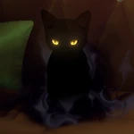

Terminus
Aeon of FinalityLore
Terminus adalah Aeon yang memimpin Path of Finality (Jalur Akhir), mewakili akhir segalanya — titik akhir waktu, akhir alam semesta, dan akhir dari semua Path. THEY adalah Aeon paling unik karena lahir di akhir waktu (end of time), ketika segala sesuatu telah berakhir, lalu bergerak **mundur waktu** menuju kelahiran alam semesta.
Terminus membagi tubuh ilahi mereka menjadi sekumpulan kucing hitam (pack of black cats), masing-masing membawa bagian dari kekuatan divine. Kucing-kucing ini berjalan melawan arus waktu, menyebarkan ramalan (prophecy) tentang akhir segalanya. Mereka muncul di masa lalu untuk "mengingatkan" atau "meramalkan" akhir yang akan datang, termasuk Theory of Four Apocalypses (empat akhir besar).
Terminus adalah satu-satunya Aeon yang bergerak mundur waktu, membuat mereka "melihat" masa depan sebagai masa lalu mereka. Pengaruh mereka terlihat di Elio (Stellaron Hunter) yang diduga Emanator Finality, karena kemampuan melihat skenario masa depan dan naskah takdir. Terminus juga terkait dengan akhir Aeon War dan kemungkinan akhir dari Aeon-Aeon lain.
Nama "Terminus" berarti akhir atau batas. Pronoun: THEY/THEM. Quote ikonik: "The Aeon of Finality walks backward in time, carrying the prophecy of the end." — Simulated Universe.
Emanator
Emanator Finality sangat langka dan misterius karena Terminus bergerak mundur waktu. Emanator utama yang paling kuat adalah **Elio** (pemimpin Stellaron Hunters), yang kemampuannya melihat masa depan dan menulis "skrip takdir" diduga berasal langsung dari Terminus. Elio bisa melihat skenario akhir dan memanipulasi peristiwa untuk mencapai Finality tertentu.
Tidak ada Emanator Finality lain yang confirmed secara eksplisit. Namun, kucing hitam Terminus muncul di berbagai tempat sebagai "utusan" atau fragmen kekuatan mereka, sering memberikan ramalan atau petunjuk tentang akhir.
Path Finality dianggap sebagai antithesis Trailblaze (Akivili), karena Finality adalah akhir perjalanan, sementara Trailblaze adalah perjalanan tanpa akhir. Tidak ada organisasi pengikut Finality seperti Family atau IPC — hanya Stellaron Hunters yang paling dekat dengan pengaruh Terminus.
Penampilan
Terminus tidak memiliki bentuk tunggal — THEY terwujud sebagai sekumpulan kucing hitam kecil (pack of black cats) yang bergerak bersama. Setiap kucing membawa bagian dari kekuatan divine Terminus, dengan mata bercahaya biru/perak yang melihat ke masa lalu.
Di lore dan Simulated Universe, kucing-kucing ini muncul di tempat-tempat krusial, sering membawa aura waktu mundur — seperti bayangan yang bergerak terbalik atau ramalan yang terwujud. Bentuk penuh Terminus (di akhir waktu) digambarkan sebagai entitas tak terlihat, karena lahir ketika segalanya telah berakhir.
Aura Terminus adalah kegelapan biru gelap dengan kilau perak, melambangkan akhir yang dingin dan tak terelakkan. Suara Terminus adalah bisikan ramalan yang bergema dari masa depan ke masa lalu.